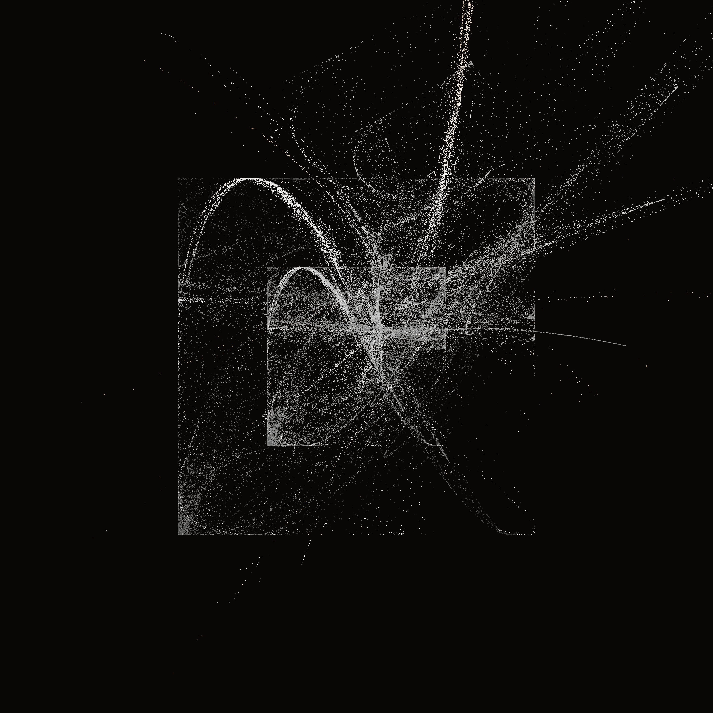
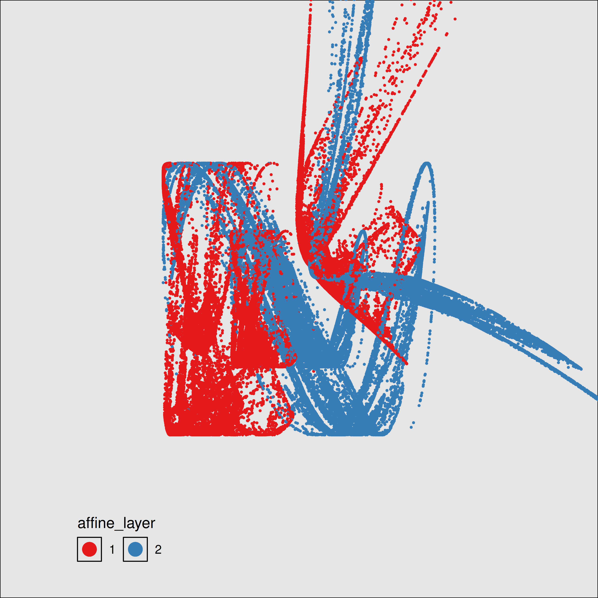
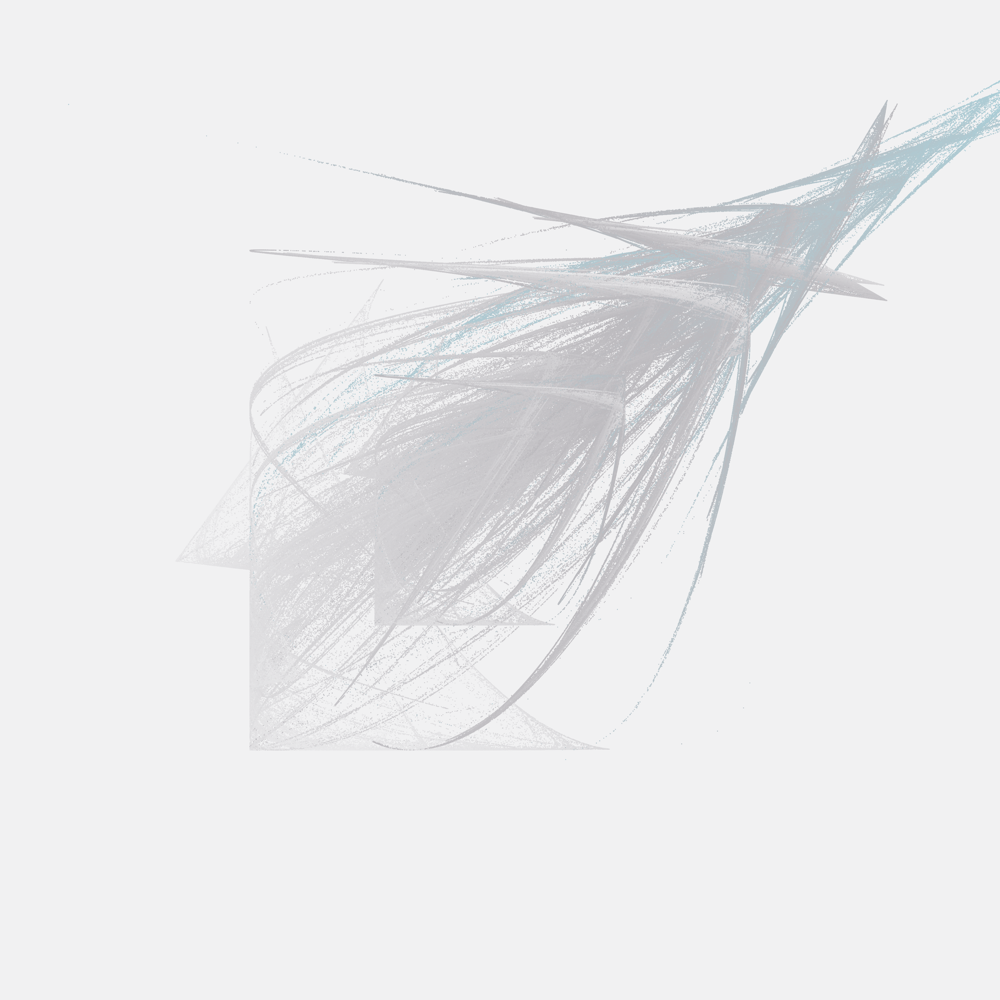
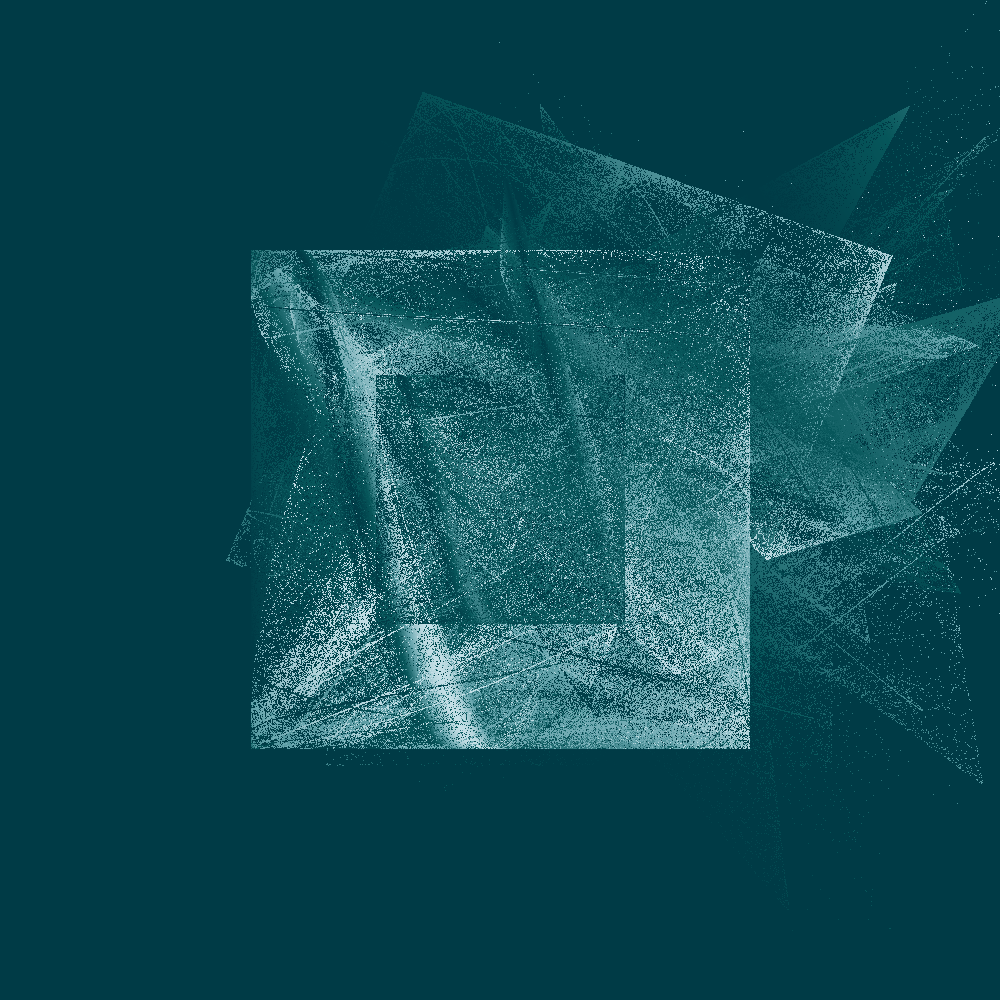

![]()
library(Rcpp)
library(ggplot2)
library(tibble)
library(purrr)
library(dplyr)
library(ggthemes)
library(tictoc)(Adapted from my Art From Code workshop)
So… iterated function systems. What are they?
Some tiresome formalism
One of the joys of leaving academia is that I can stop pretending that I don’t get all my mathematical knowledge from Wikipedia, and as the entry for iterated function systems oh so helpfully informs us, an iterated function system is defined as a finite set of contractive maps on a complete metric space \(X = (M, d)\), formally denoted
\[ \left\{f_i : X \rightarrow X \mid i = 1, 2, \ldots N \right\}, N \in \mathcal{N} \]
where the function \(f_i\) is a contraction on \(X\) if there exists some real number \(k\) such that \(d(f_i(x), f_i(y)) \leq k \ d(x,y)\) for all \(x \in M\) and \(y \in M\).
If that weren’t impenetrable enough, Wikipedia continues to explain that
Hutchinson (1981) showed that, for the metric space \({\displaystyle \mathbb {R} ^{n}}\), or more generally, for a complete metric space \(X\), such a system of functions has a unique nonempty compact (closed and bounded) fixed set \(S\). One way of constructing a fixed set is to start with an initial nonempty closed and bounded set \(S_0\) and iterate the actions of the \(f_i\), taking \(S_{n+1}\) to be the union of the images of \(S_n\) under the \(f_i\); then taking \(S\) to be the closure of the union of the \(S_n\). Symbolically, the unique fixed (nonempty compact) set \(S\subseteq X\) has the property
\[S = \overline{\bigcup_{i=1}^N f_i(S)}.\]
The set \(S\) is thus the fixed set of the Hutchinson operator \(F:2^{X}\to 2^{X}\) defined for \(A\subseteq X\) via
\[F(A)={\overline {\bigcup _{i=1}^{N}f_{i}(A)}}.\]
The existence and uniqueness of \(S\) is a consequence of the contraction mapping principle, as is the fact that
\[\lim _{n\to \infty }F^{\circ n}(A)=S\]
for any nonempty compact set \(A \in X\). (For contractive IFS this convergence takes place even for any nonempty closed bounded set \(A\)). Random elements arbitrarily close to \(S\) may be obtained by the “chaos game”
I am entirely certain that you do not care.
As impressive as I find all this notation, I don’t find it helps me understand what an iterated function system actually does. What I do find helpful, however, is to play the chaos game, because that’s a concrete method we can use to simulate the behaviour of an IFS, and in practice that’s what our code will actually do!
Chaos game for the Barnsley fern
When written as pseudocode, the chaos game is remarkably simple:
- Choose a set of starting values \((x_0, y_0)\)
- Set iteration number \(i = 1\)
- Choose a transformation function \(f\) to use on this iteration
- Get the next value by passing the current value to the function, i.e. \((x_i, y_i) = f(x_{i-1}, y_{i-1})\)
- Update iteration number \(i = i + 1\) and return to step 3; or finish
I’ve written this on the assumption that the functions are defined over a two dimensional space with \(x\) and \(y\) coordinates, but it generalises naturally to any number of dimensions. When choosing a transformation function in step 3, you can sample uniformly at random, or impose a bias so that some transformation are applied more often than others.
To get a sense of how this works, let’s start with a classic example: the Barnsley fern. The Barnsley fern, like many iterated function systems I use for my art, is constructed from functions \(f(x, y)\) defined in two dimensons. Better yet, they’re all affine transformations so we can write any such function down using good old fashioned linear algebra, and compute everything using matrix multiplication and addition:
\[f(x,y)={\begin{bmatrix}a&b\\c&d\end{bmatrix}}{\begin{bmatrix}x\\y\end{bmatrix}}+{\begin{bmatrix}e\\f\end{bmatrix}}\]
There are four such functions used to build the Barnsley fern, with coefficients shown below:
| \(a\) | \(b\) | \(c\) | \(d\) | \(e\) | \(f\) | weight | interpretation | |
|---|---|---|---|---|---|---|---|---|
| \(f_1(x, y)\) | 0 | 0 | 0 | 0.16 | 0 | 0 | 0.01 | makes the stem |
| \(ƒ_2(x, y)\) | 0.85 | 0.04 | −0.04 | 0.85 | 0 | 1.60 | 0.85 | makes ever-smaller leaflets |
| \(ƒ_3(x, y)\) | 0.20 | −0.26 | 0.23 | 0.22 | 0 | 1.60 | 0.07 | makes largest left-hand leaflet |
| \(ƒ_4(x, y)\) | −0.15 | 0.28 | 0.26 | 0.24 | 0 | 0.44 | 0.07 | makes largest right-hand leaflet |
Okay, so let’s start by implementing the Barnsley fern transformation functions in R. The fern_transform() function below takes coord input as a two-element numeric vector, and an ind argument that specifies which of the four transformations to apply (this should be an integer between 1 and 4). The output is the next set of coord values to use in the chaos game:
fern_transform <- function(coord, ind) {
# coefficients for the stem function f_1
if(ind == 1) {
mat <- matrix(c(0, 0, 0, .16), 2, 2) # matrix to multiply
off <- c(0, 0) # offset vector to add
}
# coefficients for the small leaflet function f_2
if(ind == 2) {
mat <- matrix(c(.85, -.04, .04, .85), 2, 2)
off <- c(0, 1.6)
}
# coefficients for the right-side function f_3
if(ind == 3) {
mat <- matrix(c(.2, .23, -.26, .22), 2, 2)
off <- c(0, 1.6)
}
# coefficients for the left-side function f_4
if(ind == 4) {
mat <- matrix(c(-.15, .26, .28, .24), 2, 2)
off <- c(0, .44)
}
# return the affine transformed coords
coord <- mat %*% coord + off
return(coord)
}Armed with the fern_transform() function, we can write a fern_chaos() function that implements the chaos game for the Barnsley fern. The arguments to fern_chaos() specify the number of iterations over which the game should be played, and (optionally) a seed to control the state of the random number generator:
fern_chaos <- function(iterations = 10000, seed = NULL) {
if(!is.null(seed)) set.seed(seed)
# which transformation to apply at each iteration
transform_index <- sample(
x = 1:4,
size = iterations,
replace= TRUE,
prob = c(.01, .85, .07, .07)
)
# initialise chaos game at the origin
start <- matrix(c(0, 0))
# helper function to collapse accumulated output
bind_to_column_matrix <- function(lst) {
do.call(cbind, lst)
}
# iterate until done!
coord_matrix <- transform_index |>
accumulate(fern_transform, .init = start) |>
bind_to_column_matrix()
# tidy the output, add extra columns, and return
coord_df <- t(coord_matrix) |>
as.data.frame()
names(coord_df) <- c("x", "y")
coord_df <- coord_df |>
as_tibble() |>
mutate(
transform = c(0, transform_index),
iteration = row_number() - 1
)
return(coord_df)
}This function is a little fussier than it really needs to be. For example, if you compare my code to the base R version on Wikipedia you’ll see I spend extra effort tidying the results at the end: rather than returning a matrix of points, I’ve coerced it to a tibble that includes the coordinates as columns x and y, but in addition contains a column transform specifying which of the transformation functions was used to generate each point, and the iteration number as a unique identifier for each row. In any case, here’s the output:
fern_dat <- fern_chaos(seed = 1)
fern_dat# A tibble: 10,001 × 4
x y transform iteration
<dbl> <dbl> <dbl> <dbl>
1 0 0 0 0
2 0 1.6 2 1
3 0.064 2.96 2 2
4 0.173 4.11 2 3
5 -1.03 2.54 3 4
6 -0.778 3.80 2 5
7 -1.14 2.26 3 6
8 0.804 0.684 4 7
9 0.711 2.15 2 8
10 0.690 3.40 2 9
# ℹ 9,991 more rowsIt looks nicer as a plot though :)
ggplot(fern_dat, aes(x, y)) +
geom_point(colour = "white", size = 1, stroke = 0) +
coord_equal() +
theme_void()The reason I went to the extra trouble of storing the transform column was so I could map it to the colour aesthetic in my plot. When I do this, I get this as the result: there’s a transformation function that defines the left leaf shape, another that defines the right leaf shape, and a third one that defines the stem shape. Finally, there’s a function that copies, shifts-up, and rotates its input in a way that produces the vertical symmetry in the output.
ggplot(fern_dat, aes(x, y, colour = factor(transform))) +
geom_point(size = 1, stroke = 0) +
coord_equal() +
theme_void() +
theme(
legend.text = element_text(colour = "white"),
legend.title = element_text(colour = "white")
) +
guides(colour = guide_legend(
title = "transformation",
override.aes = list(size = 5))
)It’s painfully obvious now what each of the transformation functions does!
As we’ll see a little later, it can be very useful to plot your outputs this way sometimes: even if you’re planning to do something fancier with colour later, the ability to visualise which parts of your output are associated with a particular function is useful for diagnosing what your system is doing. My experience has been that iterated function systems are difficult to reason about just by looking at the code: the relationship between the code and the output is pretty opaque, so you have to rely on diagnostics like this when tweaking the output of your system.
For no particular reason, here’s our fern with the colour aesthetic mapped to the iteration number:
ggplot(fern_dat, aes(x, y, colour = iteration)) +
geom_point(size = 1, stroke = 0, show.legend = FALSE) +
coord_equal() +
theme_void() Happy accidents
Iterated function systems can be a lot more elaborate than the Barnsley fern, often involving transformation functions that are constructed according to some fancypants compositional rules. For example, the fractal flame algorithm proposed by Scott Draves in 1992 (here’s the original article) specifies transformation functions \(f_i()\) – called “flame functions” – that are composed according to the rule:
\[ f_i(\mathbf{x}) = \sum_j w_{ij} \ g_j(\mathbf{A}_i \mathbf{x}) \]
where
- \(\mathbf{A}_i\) is a matrix that defines an affine transformation of the coordinates \(\mathbf{x}\) associated with this specific flame function (i.e., each flame function \(f_i()\) has its own transformation \(\mathbf{A_i}\), and in the two dimensional case \(\mathbf{x}\) is just the points \((x, y)\));
- the various \(g_j()\) functions are called “variant functions”, and these don’t have to be linear: they can be sinusoidal, or discontinuous, or whatever you like really; and
- each flame function is defined as a linear combination of the variant functions: the coefficient \(w_{ij}\) specifies the weight assigned to the \(j\)-th variant function by the \(i\)-th flame function.
Additionally, just as we saw with the Barnsley fern, the flame functions themselves can be weighted with a probability vector: a system can be defined in a way that has a bias for some flame functions over others.
This probably sounds a bit… intense, right?
So yeah. Um.
When I first decided to try implementing the fractal flame algorithm I decided I wasn’t going to bother with fancypants weights \(w_{ij}\), so I… ignored them. But then – because I was tired and not really paying attention to the subscripts in Draves equations – I decided that my system was going to have one flame function for every possible combination of transformation matrix \(\mathbf{A}_i\) and variant function \(g_j()\). What this meant is that the thing I actually coded was this. Given a set of variant functions \(g_1, g_2, \ldots, g_n\) and some set of transformation matrices \(\mathbf{A}_1, \mathbf{A}_2, \ldots, \mathbf{A}_m\), I included every transformation function \(f_{ij}(\mathbf{x})\) of the following form:
\[ f_{ij}(\mathbf{x}) = g_j(\mathbf{A}_i \mathbf{x}) \] When your transformation functions are composed in this way you can sample a random transformation \(f_{ij}\) by sampling the two components independently: sample a transformation matrix \(\mathbf{A}_i\) and a variant function \(g_j\), and then you’re done. It ends up being a weird special case of the fractal flame algorithm, but it turns out you can make pretty things that way.
Oh well. Whatever.
The point of art isn’t to mindlessly copy what someone else has done, and if I’m being honest with myself the truth is that some of the best art I’ve created started with a coding error or a misinterpretation like this one. As Bob Ross famously said,
There are no mistakes, just happy accidents.
Chaos game for unboxing
Enough chitchat about my artistic process. Let’s actually implement a version of my Unboxing system. In this example, the coefficients that define the affine transformations \(\mathbf{A_i}\) have been sampled uniformly at random, with values ranging from -1 to 1. There’s a layers input argument that specifies how many of these affine transformations to include (no I don’t know why I called it layers – it’s a bad name I think). Anyway, the code snippet below shows how this is implemented:
coeffs <- array(
data = runif(9 * layers, min = -1, max = 1),
dim = c(3, 3, layers)
)The coefficients are stored in an array: coeffs[,,i] is the matrix of coefficients \(\mathbf{A_i}\).
There are three variant functions \(g_j\) in this system: two of them are sinusoidal functions: one of them computes sin(x) and sin(y), and the other computes the same thing but multiplies the output by two. Both of these will produce wavy shapes. The other one is a rescaling function: it tends to shift points towards the top right corner. The code snippet below implements these variant functions:
funs <- list(
function(point) point + (sum(point ^ 2)) ^ (1/3),
function(point) sin(point),
function(point) 2 * sin(point)
)The unboxer_base() function below implements the whole thing:
unboxer_base <- function(iterations, layers, seed = NULL) {
if(!is.null(seed)) set.seed(seed)
# coefficients defining affine layer transforms, A_i
coeffs <- array(
data = runif(9 * layers, min = -1, max = 1),
dim = c(3, 3, layers)
)
# list of variant functions, g_j
funs <- list(
function(point) point + (sum(point ^ 2)) ^ (1/3),
function(point) sin(point),
function(point) 2 * sin(point)
)
# updater function: apply the layer, then the function
# (the weirdness with point[3] is me treating colour as special)
update <- function(point, layer, transform) {
f <- funs[[transform]]
z <- point[3]
point[3] <- 1
point <- f(point %*% coeffs[,,layer])
point[3] <- (point[3] + z)/2
return(point)
}
# initial point
point0 <- matrix(
data = runif(3, min = -1, max = 1),
nrow = 1,
ncol = 3
)
# sample points
layer_ind <- sample(layers, iterations, replace = TRUE)
trans_ind <- sample(length(funs), iterations, replace = TRUE)
points <- accumulate2(layer_ind, trans_ind, update, .init = point0)
# tidy up, add columns, and return
points <- matrix(unlist(points), ncol = 3, byrow = TRUE)
points <- cbind(
points,
c(0, layer_ind),
c(0, trans_ind)
)
return(points)
}Let’s run this system for a few iterations, just so we can see what the output looks like:
unboxer_base(10, layers = 5, seed = 333) [,1] [,2] [,3] [,4] [,5]
[1,] -0.8825507 -1.67203174 0.36262158 0 0
[2,] 1.0764159 0.96570274 -0.98567258 5 3
[3,] 0.9459713 -0.02509324 1.21601399 3 1
[4,] 1.2223664 -0.93808971 -0.04718621 1 1
[5,] 1.8462734 1.58519247 0.44778402 1 3
[6,] 0.3400557 -0.99766695 0.21844210 3 2
[7,] 0.3551727 0.20495003 3.28357073 4 2
[8,] -0.9168023 0.19692929 -0.79482471 4 2
[9,] -0.4479714 -0.19201355 -0.82068698 1 3
[10,] -0.7158925 -0.36968979 -0.27724644 2 1
[11,] -0.9885079 1.29440457 0.58763161 5 2As you can see, this time around I’ve not gone to the effort of converting it to a tibble or making it pretty. This output is a matrix. The first column is the x-coordinate and the second column is the y-coordinate. The third column is a “z-coordinate” that we’ll map to the colour aesthetic later. Column four specifies the layer number (i.e., the value \(i\) specifying which affine matrix \(\mathbf{A}_i\) was used), and column five specifies the variant function number (i.e., the value \(j\) specifying which variant function \(g_j()\) was used).
If we want to turn these numbers into art and attach colours to the points, we are going to need a palette function, so as usual I’ll insert my code to sample one of the canva palettes:
sample_canva2 <- function(seed = NULL, n = 4) {
if(!is.null(seed)) set.seed(seed)
sample(ggthemes::canva_palettes, 1)[[1]] |>
(\(x) colorRampPalette(x)(n))()
}Having done all that work, the rendering function in not very fancy: it’s just some ggplot2 code to create a scatter plot from the points and colour them using a canva palette:
unbox_art <- function(data, seed = NULL, size = 1) {
# convert to data frame and sample a palette
data <- data |> as.data.frame() |> as_tibble()
names(data) <- c("x", "y", "c", "l", "t")[1:ncol(data)]
shades <- sample_canva2(seed)
# render image as a scatter plot
ggplot(data, aes(x, y, colour = c)) +
geom_point(
size = size,
stroke = 0,
show.legend = FALSE
) +
theme_void() +
coord_equal(xlim = c(-4, 4), ylim = c(-4, 4)) +
scale_colour_gradientn(colours = shades) +
scale_x_continuous(expand = c(0, 0)) +
scale_y_continuous(expand = c(0, 0)) +
theme(panel.background = element_rect(
fill = shades[1], colour = shades[1]
))
}The results can be very pretty, especially when you generate a large number of points (say, 3 million) and plot them with a very small marker size (say, .1).
mil <- 1000000
tic()
unboxer_base(3 * mil, layers = 3, seed = 66) |>
unbox_art(seed = 66, size = .1)
toc()65.016 sec elapsedThe system is slow, but I’m usually willing to wait 30 seconds for something pretty. (Though in a moment I’ll talk about how we can speed this up drastically)
The outputs from this system have a fairly consistent look and feel: a pair of nested boxes, with something “bursting” from the top right corner. The fine grained details vary a lot from output to output, and there are some systematic differences as a function of the number of layers. Here’s an example showing what happens when I ratchet up the number of layers from 2 to 9:
tic()
unboxer_base(mil, layers = 2, seed = 999) |> unbox_art(seed = 2, size = .2)
unboxer_base(mil, layers = 5, seed = 333) |> unbox_art(seed = 2, size = .2)
unboxer_base(mil, layers = 9, seed = 420) |> unbox_art(seed = 2, size = .2)
toc() 
69.069 sec elapsedTo understand what’s going on in this system, I’ll go through the same exercise I did with the Barnsley fern. I’ll generate the data for a piece of art by calling unboxer_base(), and then plot it three ways. First I’ll show it as a pure black and white image to show the overall configuration of points, then I’ll break it down based on the components. Because each transformation function is defined in terms the affine component and the variant component, I’ll show two different versions of this.
dat <- unboxer_base(mil, layers = 2, seed = 99) |>
as.data.frame() |>
as_tibble()
names(dat) <- c("x", "y", "c", "affine_layer", "variant_function")
dat <- dat |>
slice_tail(n = -1) |>
mutate(
affine_layer = factor(affine_layer),
variant_function = factor(variant_function)
)
ggplot(dat, aes(x, y)) +
geom_point(size = .4, stroke = 0, show.legend = FALSE) +
theme_void() +
coord_equal(xlim = c(-4, 4), ylim = c(-4, 4))
ggplot(dat, aes(x, y, colour = variant_function)) +
geom_point(size = .4, stroke = 0) +
coord_equal(xlim = c(-4, 4), ylim = c(-4, 4)) +
scale_colour_brewer(palette = "Set2") +
guides(colour = guide_legend(nrow = 1, override.aes = list(size = 5))) +
theme_void() +
theme(legend.position = c(0.2, 0.1))Warning: A numeric `legend.position` argument in `theme()` was deprecated in ggplot2
3.5.0.
ℹ Please use the `legend.position.inside` argument of `theme()` instead.ggplot(dat, aes(x, y, colour = affine_layer)) +
geom_point(size = .4, stroke = 0) +
coord_equal(xlim = c(-4, 4), ylim = c(-4, 4)) +
scale_colour_brewer(palette = "Set1") +
guides(colour = guide_legend(nrow = 1, override.aes = list(size = 5))) +
theme_void() +
theme(legend.position = c(0.2, 0.1))
This gives you a sense of what’s going on here: in the middle panel you can see that the two “sinusoidal” components have the effect of creating the boxes, because sin(x) is constrained to lie between -1 and 1. The snaky, wavy patterns that you see in some the outputs are also related to these components, but I haven’t plotted the data in a way that makes this obvious.
In contrast, on the right you can see the effect of the affine transformations. Notice that the blue pattern kind of looks like a “squashed and rotated” version of the red pattern? That’s exactly what the affine transforms do. They create these distortions.
Faster chaos with Rcpp
Waiting 30 seconds for something pretty is kind of annoying, especially when you’re still developing the system and you just want to tinker with the settings to see what it does. It would be nice if we could speed this up, right? The easiest way to speed things up is to run fewer iterations and use larger plot sizes. I mean, this works perfectly fine…
tic()
unboxer_base(50000, layers = 2, seed = 999) |> unbox_art(seed = 2, size = 1)
unboxer_base(50000, layers = 5, seed = 333) |> unbox_art(seed = 2, size = 1)
unboxer_base(50000, layers = 9, seed = 420) |> unbox_art(seed = 2, size = 1)
toc() 
4.729 sec elapsedIf you’re okay with a coarser grained output (or flat out don’t want to mess around with C++ code), your problems are solved! Read no further!
If speed is a consideration – especially if the rendering times are interfering with the creative process – one possibility would be to write the slow parts of your code in C++, and then call it from R using the Rcpp package. To be honest, I’m not the best C++ coder myself and am only moderately comfortable with Rcpp, so I’m not going to attempt a tutorial here. Instead, what I’ll do is mention that rcpp.org has some excellent resources, and Advanced R also has a good chapter on Rewriting R code in C++ that you may find helpful. I’ll also show you what I did for this system, because sometimes it’s helpful to see C++ code that implements the same functions as the original R code. Let’s imagine I have a file called unbox-fast.cpp that includes the following:
#include <Rcpp.h>
#include <iostream>
using namespace Rcpp;
using namespace std;
// [[Rcpp::export]]
NumericMatrix unboxer_rcpp(int iterations, int layers) {
// variables
NumericMatrix pts(iterations, 3);
NumericMatrix cff(9, layers);
int r, f;
double x, y, z, s;
// coefficients
for(int i = 0; i < 9; i++) {
for(int j = 0; j < layers; j++) {
cff(i,j) = R::runif(-1,1);
}
}
// initial point
pts(0, 0) = R::runif(-1, 1);
pts(0, 1) = R::runif(-1, 1);
pts(0, 2) = R::runif(-1, 1);
// accumulate
for(int t = 1; t < iterations; t++) {
r = rand() % layers; // which transform to use?
f = rand() % 3; // which function to use?
// apply transformation
x = cff(0, r) * pts(t-1, 0) + cff(1, r) * pts(t-1, 1) + cff(2, r);
y = cff(3, r) * pts(t-1, 0) + cff(4, r) * pts(t-1, 1) + cff(5, r);
z = cff(6, r) * pts(t-1, 0) + cff(7, r) * pts(t-1, 1) + cff(8, r);
// apply function
if(f == 0) {
s = pow(x*x + y*y + z*z, 1/3);
x = x + s;
y = y + s;
z = z + s;
} else if(f == 1) {
x = sin(x);
y = sin(y);
z = sin(z);
} else {
x = 2 * sin(x);
y = 2 * sin(y);
z = 2 * sin(z);
}
// store new point
pts(t, 0) = x;
pts(t, 1) = y;
pts(t, 2) = (z + pts(t-1, 2))/2;
}
return pts;
}When sourced from R in the “right” way, this will create a function unboxer_rcpp() that I can call from R. And when I say “sourced” from R what I really mean is if I did this:
Rcpp::sourceCpp(file = "unbox-fast.cpp")If you’ve used Rcpp, this should seem familiar.
If you haven’t used Rcpp and are trying to make up your mind if it is worth the effort to learn, well, I’ll offer this comparison. Here’s the difference in speed for generating a million data points in the original system unbox_base(), compared to the C++ implementation unbox_rcpp():
tic(); set.seed(999); dat <- unboxer_base(mil, layers = 2); toc()
tic(); set.seed(999); dat <- unboxer_rcpp(mil, layers = 2); toc() 16.054 sec elapsed
0.034 sec elapsedNot too bad, really :)
When written in C++ we can generate 10 million data points extremely quickly. So much so that it’s outrageously fast to do it three times with different seeds and different numbers of layers:
tic()
set.seed(123); dat1 <- unboxer_rcpp(10 * mil, layers = 2)
set.seed(101); dat2 <- unboxer_rcpp(10 * mil, layers = 5)
set.seed(420); dat3 <- unboxer_rcpp(10 * mil, layers = 9)
toc()1.573 sec elapsedTransforming the data into plots, on the other hand, is a little slower. At this point the rendering code is the part that is causing slowness:
tic()
dat1 |> unbox_art(seed = 123, size = .2)
dat2 |> unbox_art(seed = 101, size = .2)
dat3 |> unbox_art(seed = 420, size = .2)
toc()


207.29 sec elapsedHm. About 1.5 seconds to generate the data, about 100 seconds to produce the plots. That’s a little unfortunate. Perhaps we can speed that up too? After all, ggplot2 has a lot of bells and whistles that we aren’t using in this plot. Maybe we can sidestep the issue…
Even faster chaos with raster representation
Back in the era when I held an academic appointment, one of my research topics used to be human mental representation. When people have to make judgments, choices, or reason about something unfamiliar, we rely on our knowledge of the world to guide us. We have rich, structured knowledge from our past experience that we can bring to bear on new situations, which is super useful because in addition to being fabulous and insanely complicated things, neurons are slow and squishy things relative to machines. Honestly it’s a bit of a surprise that we can compute anything with these things, and borderline miraculous that we manage to think clever thoughts using them.
All of this is in service of a really basic comment: if your computing machine doesn’t store data in a sensible format, you’re going to find it really hard to do anything useful. But the converse is also true… if you represent information in the right way, you’ll be able to accomplish a lot. Over and over again, across a lot of different problems I used to study, I’d see a consistent pattern: people make sensible choices when we’re given information structured in the “right” way. But if you present the same information a different and counterintuitive way, people don’t know what to do with it and they make insane choices. As a psychological researcher, it’s really easy to design studies that make people look stupid, and equally easy to design studies that make people look smart. It’s almost criminal easy to “rig” the results of a study this way.
Anyway.
My point here is that machines are kind of the same. If you want your image rendering to go faster, well, maybe you should store the data in a format that mirrors the output you want? I mean, at this point we’re storing a data frame with 10 millions coordinates, and then plotting circles in an abstract canvas that ggplot2 constructs with the help of the grid graphics system, and then… aren’t you tired already?
If you want a bitmap that stores pixel values at the end of your generative process, why not start with the data in exactly the same format at the beginning? Don’t draw circles-as-polygons-around-a-coordinate. Just store the damned pixel values from the outset.
Okay, so here’s a slight reimagining of our Rcpp function that does exactly that. We store a matrix representing the bitmap from the very beginning. The output of this unboxer_grid() function is a square matrix with the number of rows and columns determined by the pixels input:
#include <Rcpp.h>
#include <iostream>
using namespace Rcpp;
using namespace std;
// [[Rcpp::export]]
NumericMatrix unboxer_grid(int iterations,
int layers,
int pixels,
double border) {
// variables
NumericMatrix image(pixels, pixels);
NumericMatrix cff(9, layers);
int r, c, f, x_ind, y_ind;
double x, y, z, s;
// set image matrix to zeros
for(int r = 0; r < pixels; r++) {
for(int c = 0; c < pixels; c++) {
image(c, r) = 0;
}
}
// coefficients
for(int i = 0; i < 9; i++) {
for(int j = 0; j < layers; j++) {
cff(i,j) = R::runif(-1,1);
}
}
// values for initial state
double x_old = R::runif(-1, 1);
double y_old = R::runif(-1, 1);
double z_old = R::runif(-1, 1);
// accumulate
for(int t = 1; t < iterations; t++) {
r = rand() % layers; // which transform to use?
f = rand() % 3; // which function to use?
// apply transformation
x = cff(0, r) * x_old + cff(1, r) * y_old + cff(2, r);
y = cff(3, r) * x_old + cff(4, r) * y_old + cff(5, r);
z = cff(6, r) * x_old + cff(7, r) * y_old + cff(8, r);
// apply function
if(f == 0) {
s = pow(x*x + y*y + z*z, 1/3);
x = x + s;
y = y + s;
z = abs(z + s);
} else if(f == 1) {
x = sin(x);
y = sin(y);
z = sin(z) + 1;
} else {
x = 2 * sin(x);
y = 2 * sin(y);
z = 2 * (sin(z) + 1);
}
// compute indices to be updated
x_ind = int (x * pixels / (2 * border)) + pixels / 2;
y_ind = int (y * pixels / (2 * border)) + pixels / 2;
// store results if they fall within the range
if(x_ind >= 0 & x_ind < pixels) {
if(y_ind >= 0 & y_ind < pixels) {
image(x_ind, y_ind) = z;
}
}
// move new to old
x_old = x;
y_old = y;
z_old = (z + z_old) / 2;
}
return image;
}From a data generation perspective, there’s really not much difference between this version and the last one. They’re both fast. The C++ code to generate the image in a bitmap format isn’t faster or slower than the C++ code we wrote last time:
tic()
set.seed(123); mat1 <- unboxer_grid(10 * mil, 2, 1000, 4)
set.seed(101); mat2 <- unboxer_grid(10 * mil, 5, 1000, 4)
set.seed(420); mat3 <- unboxer_grid(10 * mil, 9, 1000, 4)
toc()1.207 sec elapsedAh, but now look what happens when we generate an image from the data. Originally we were working with ggplot2, and we were forcing it to convert a large data frame to an image in a very very painful way. This time around, the data is already in the right format. It’s a bitmap that we can pass to image(). No heavy lifting required!
raster_art <- function(mat, seed = NULL, trim = .001) {
zlim <- quantile(mat, c(trim, 1 - trim))
mat[mat < zlim[1]] <- zlim[1]
mat[mat > zlim[2]] <- zlim[2]
op <- par(mar = c(0, 0, 0, 0))
image(
z = mat,
axes = FALSE,
asp = 1,
useRaster = TRUE,
col = sample_canva2(seed, n = 256)
)
par(op)
}
tic()
raster_art(mat1, seed = 123)
raster_art(mat2, seed = 101)
raster_art(mat3, seed = 420)
toc()
0.921 sec elapsedOkay fine, this new version doesn’t handle shading in precisely the same way the original version did, but it’s still very pretty – and it’s soooooo much faster!
How fast is it? Fast enough that I’m perfectly willing to generate an image by playing the chaos game for 100 million iterations. Hell, it’s fast enough that I’ll generate six of them:
pretty_boxes <- function(
seed,
iterations = 100000000,
layers = 5,
pixels = 4000,
background = "black",
border = 4,
trim = .001
) {
set.seed(seed)
mat <- unboxer_grid(
iterations = iterations,
layers = layers,
pixels = pixels,
border = border
)
shades <- c(background, sample_canva2(seed, n = 1023))
zlim <- quantile(mat, c(trim, 1 - trim))
mat[mat < zlim[1]] <- zlim[1]
mat[mat > zlim[2]] <- zlim[2]
op <- par(mar = c(0, 0, 0, 0))
image(
z = mat,
axes = FALSE,
asp = 1,
useRaster = TRUE,
col = shades
)
par(op)
}
tic()
pretty_boxes(286)
pretty_boxes(380)
pretty_boxes(100)
toc()


33.626 sec elapsedtic()
pretty_boxes(222)
pretty_boxes(567)
pretty_boxes(890)
toc() 


39.632 sec elapsedReuse
Citation
BibTeX citation:
@online{navarro2024,
author = {Navarro, Danielle},
title = {Art from Code {V:} {Iterated} Function Systems},
date = {2024-12-22},
url = {https://blog.djnavarro.net/posts/2024-12-22_art-from-code-5/},
langid = {en}
}
For attribution, please cite this work as: